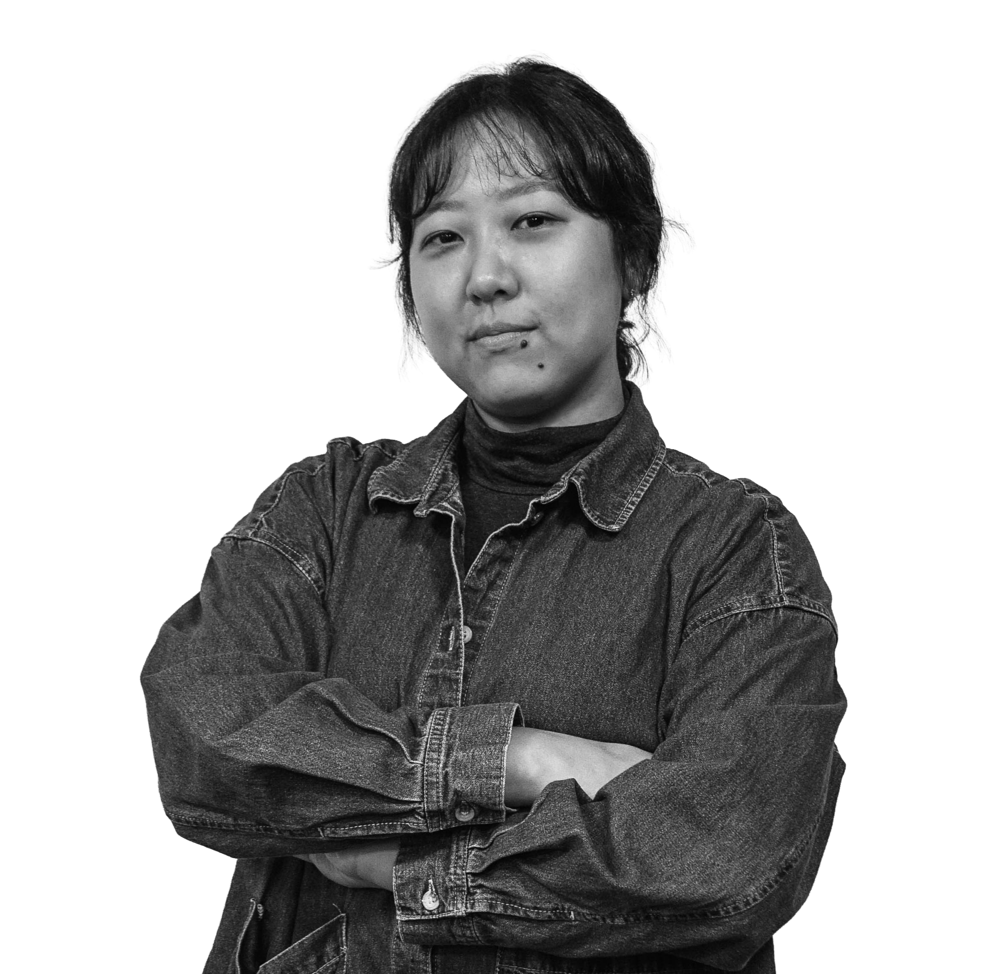

Tae Eun
I build the structures that help ideas move.
My work sits at the intersection of strategy, systems, and storytelling—turning complexity into frameworks that people can align around and move with.

Selected Projects
My work sits between structure and imagination. I have spent more than a decade building cross-border partnerships and strategic programs in film and media, and more recently expanding that practice into research, business innovation, and experience strategy through graduate work in the U.S. Across those settings, I have been most drawn to the same challenge: how to turn complexity into something people can align around and move with.
Atlanta World Cup Host Committee / Metro Atlanta Chamber / SCAD · 2026–Present
Helped shape how Atlanta welcomes the world for FIFA World Cup 2026. I translated cultural insight, brand storytelling, and spatial logic into a citywide experience system that helps people move with clarity while building collective energy.
Deloitte / SCAD · 2025
Led strategy for a public-facing healthcare communication project focused on improving clarity, trust, and accessibility.
Korean Film Council (KOFIC) · 2022–2024
Led cross-border partnerships and strategic initiatives across the global film industry. I built programs, alliances, and new ways of working that helped stakeholders move from shared intent to real collaboration.
Korean Film Council (KOFIC) · 2018–2022
Worked at the intersection of communication, coordination, and institutional trust. I helped make complex stakeholder interactions more structured, responsive, and sustainable across teams and external partners.
Korean Film Council (KOFIC) · 2013–2018
Supported Korea's presence at major international film markets through operations, industry programs, and market analysis.